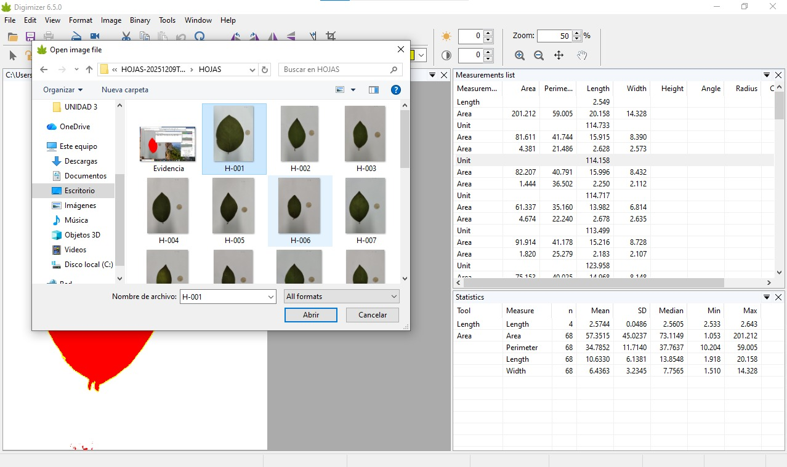
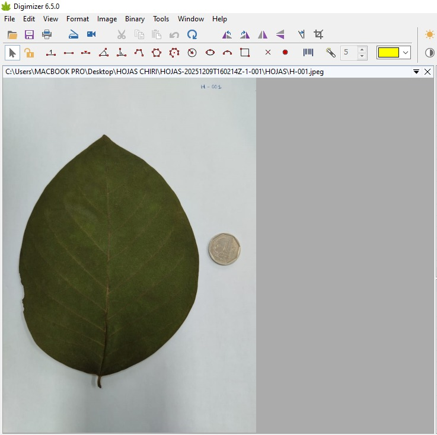
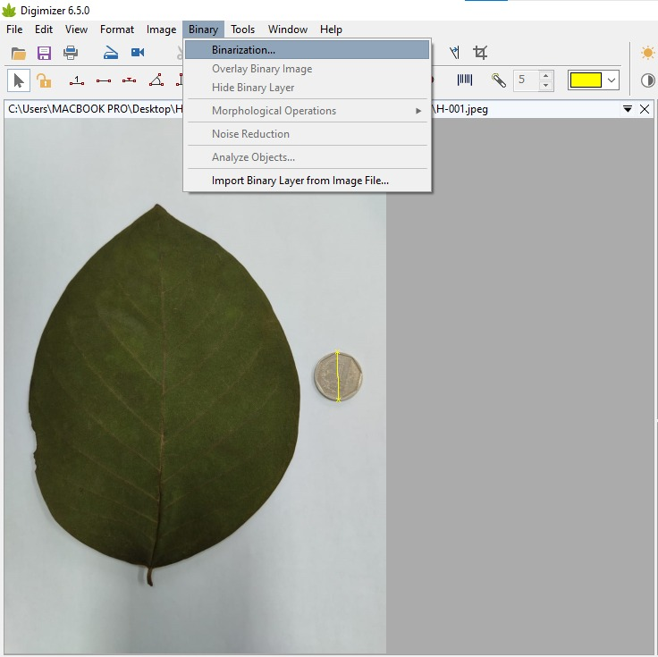
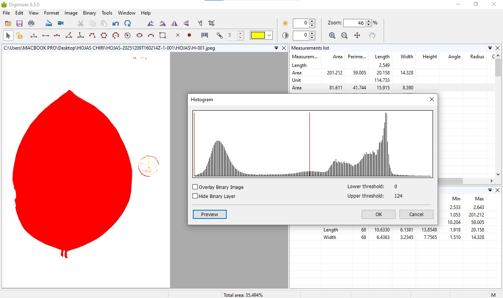
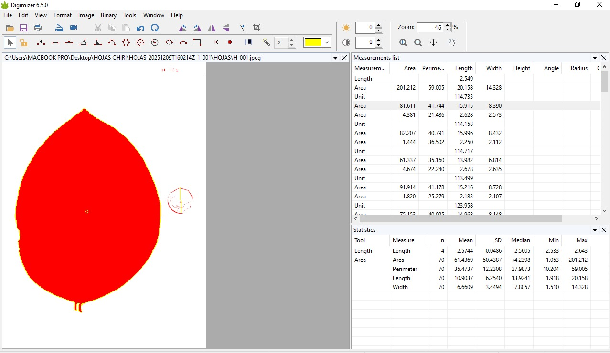

Evaluación cuantitativa de la anotación morfometrica digital en hojas de Annona cherimola
Author
Royber Chuquizuta, Hermes Galoc, Mayra Tarrillo, Erick Vasquez, Jorge Villa y Jhan Castro
I. INTRODUCCIÓN
El análisis morfométrico de estructuras vegetales constituye una herramienta fundamental en estudios botánicos y agronómicos, permitiendo la cuantificación precisa de características foliares (Smith et al., 2018). Los métodos digitales reducen significativamente el tiempo de análisis y la variabilidad asociada al nivel de experiencia del investigador en comparación con las mediciones manuales tradicionales (Pérez & García, 2020). La chirimoya (Annona cherimola) es un frutal subtropical de la familia Annonaceae que presenta hojas simples, alternas, de forma ovoide a elíptica, con dimensiones aproximadas de 10 a 25 cm de largo (Lara et al., 2019). La caracterización morfométrica mediante descriptores como área del limbo, perímetro e índice de redondez ha demostrado ser útil para estudios de variabilidad genética (Rodríguez et al., 2021). Entre las herramientas de análisis digital disponibles, ImageJ es un programa de código abierto ampliamente utilizado que permite realizar mediciones de área, perímetro y otras características morfológicas en estructuras biológicas (Schneider et al., 2012). Por su parte, Digimizer es un software flexible que permite mediciones manuales precisas y detección automática de objetos (MedCalc Software, 2021). Estudios comparativos han demostrado que estos softwares presentan alta correlación con mediciones de referencia, con coeficientes de determinación superiores a 0.999 (Easlon & Bloom, 2014). Aunque ambas herramientas han sido validadas individualmente, investigaciones previas sugieren que pueden existir diferencias en su desempeño según la aplicación específica (Johnson & Wilson, 2019).
III.MATERIALES Y MÉTODOS
3.1. Materiales
Softwares (ImageJ y Digimizer)
Hojas de chirimoya (25)
Laptop
3.2. Metodología empleada
Paso 1: Instalación y apertura del software
Descargar e instalar Digimizer desde la página oficial (www.digimizer.com)
Familiarizarse con la interfaz: barra de herramientas superior, panel de trabajo central y ventana de resultados.
Paso 2: Importación de imagen
Hacer clic en “Open Image > Fil”.
Navegar hasta la carpeta donde se encuentran las imágenes de las hojas de chirimoya.

Seleccionar la imagen deseada (formatos: JPG).

La imagen aparecerá en el área de trabajo central del programa. - Verificar que la imagen se visualice correctamente y con buena calidad.
Paso 3: Calibración de la Escala
Identificar la escala de referencia en la imagen (moneda).
Ubicar en la barra de herramientas “Unidad” y marcar con una línea los extremos de la moneda.
Seleccionar y digitar la escala (cm).
Verificar que el número de píxeles detectados sea correcto.
Hacer clic en “OK” para confirmar la calibración.
La calibración quedará guardada para esta sesión.
Paso 4: Ajustes de Visualización (Opcional)
Para mejorar la precisión del trazado:
Usar el zoom para acercar la imagen:
Herramienta de zoom (+) en la barra de herramientas.
Ajustar el brillo y contraste si es necesario:
Ir a “Contraste” y mover los deslizadores hasta obtener mejor definición del borde de la hoja.
Aplicar cambios.
Paso 5: Medición automática de parámetros
Usar la herramienta “Binary – Binarización”.

El software nos proporciona el histograma de la imagen.

Emplear “Binary – Analizar objeto
El software calculará automáticamente los siguientes parámetros:
Área (cm²), Largo máximo (diámetro mayor), Ancho máximo (diámetro menor)

Para obtener medidas más exactas se puede utilizar la herramienta “Magic Contour Tool”
Paso 6: Registro y anotación de medidas
Verificar que todas las mediciones se muestren en la ventana de resultados
Anotar los valores principales en una hoja Excel:
Código de la hoja
Bloque
Área (cm²)
Longitud máxima (cm)
Ancho máximo (cm)
Paso 7: Guardar la Medición con Anotaciones (Opcional)
Si deseas conservar el trazado realizado, se puede exportar como imagen o realizar captura.
Paso 8: Recomendaciones Importantes - Iluminación: Trabajar con imágenes de buena calidad y contraste adecuado.
RESULTADOS
Tras ejecutar todo el procedimiento en Digimizer, el programa generó automáticamente las anotaciones morfológicas correspondientes a cada una de las hojas de chirimoya analizadas. El software obtuvo los valores de área, longitud y ancho lo que permitió contar con un conjunto de datos cuantitativos suficiente para describir la morfología de la hoja evaluada.
Donde se muestra las capturas de las mediciones en el software:
La comparación de las mediciones realizadas en hojas de chirimoya mediante los programas Digimizer e ImageJ permitió identificar diferencias significativas entre los valores obtenidos por ambos softwares. Estos resultados evidencian que la elección de la herramienta digital influye directamente en la precisión de los datos morfométricos. En consecuencia, el software que presentó menor variabilidad y mayor consistencia en sus mediciones puede considerarse el más confiable para este tipo de análisis. Esta evaluación resalta la importancia de validar previamente los instrumentos digitales utilizados en investigaciones botánicas, a fin de garantizar la obtención de datos fidedignos y adecuados para la toma de decisiones científicas.
REFERENCIAS
Easlon, H. M., & Bloom, A. J. (2014). Easy Leaf Area: Automated digital image analysis for rapid and accurate measurement of leaf area. Applications in Plant Sciences, 2(7), 1400033.
Johnson, M. T., & Wilson, R. E. (2019). Comparative analysis of image processing software for botanical research. Journal of Plant Morphology, 45(3), 234-248.
Lara, C., González, P., & Martínez, A. (2019). Caracterización morfológica de accesiones de chirimoya (Annona cherimola Mill.) en la región andina. Revista de Investigación Agraria, 28(2), 145-158.